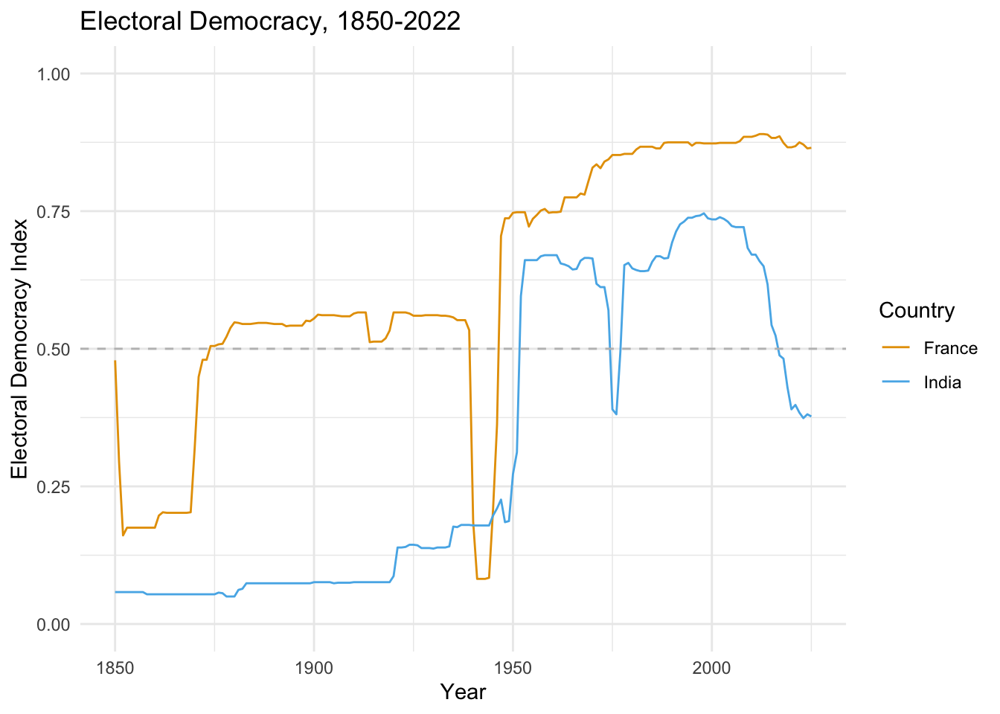
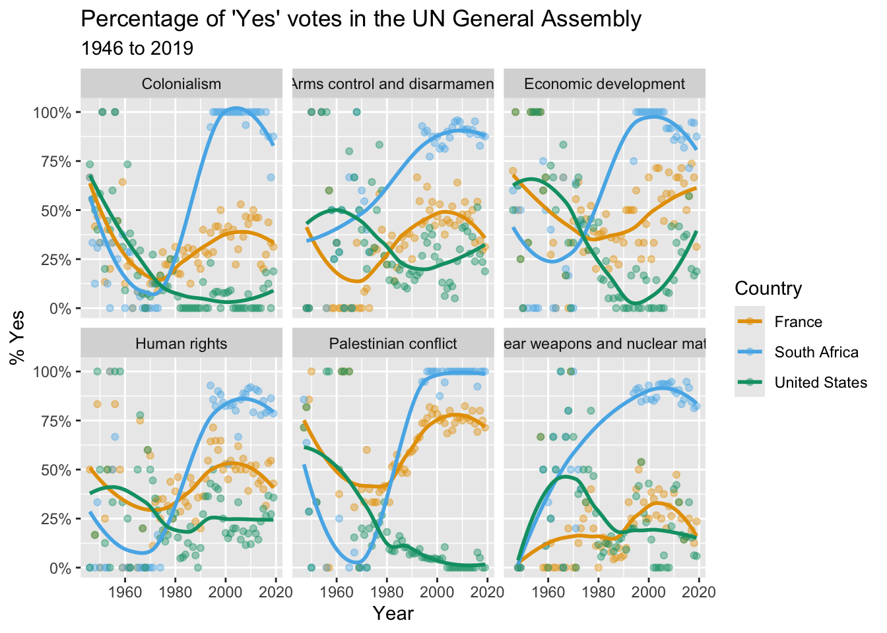

Quantitative Analysis for IA Practitioners
IAFF 6501
Welcome!
Professor Teitelbaum ejt@gwu.edu
Office Hours: Monday, 3:00-5:00 p.m.
Online only
Go to my calendly page to sign up for a slot
Office Hours: Monday, 3:00-5:00 p.m.
Online only
Go to my calendly page to sign up for a slot
Why Take this Course?
- International Affairs is changing!
- Data is everywhere and it is changing the way government works
- You will be a better consumer of data and research
- You can be a “bridge builder” between traditional analysts and data scientists on your team
Open Goverment Data Act (2018)
- Requires government data assets to be published as machine-readable data in open formats
- Requires Chief Data Officers (CDOs) to be appointed at federal agencies
- Requires CDOs to develop and maintain comprehensive data inventories
- Has led to a proliferation of data science roles in the federal government
Data Informed Dipomacy
Data is a critical instrument of diplomacy. When our workforce has data at their fingertips they are better prepared to engage diplomatically, manage effectively, and lead globally.
Secretary of State Anthony Blinken, 20221
Open Source Intelligence
- More than 90% of the analysis in the intelligence community is based on open source information
- Government agencies use a lot of the same datasets that we will be using in this class
- Yet the OSINT community has only begun to scratch the surface of what is possible with data science
Monitoring, Evaluation and Learning
- Another important use of data in international affairs is monitoring, evaluation and learning (MEL)
- MEL is a process that helps organizations track and assess the performance of their programs
- MEL is a key component of the World Bank and other agencies that focus on international development
- A major component of MEL is the use of randomized control trials (RCTs) and other designs, which you will learn about in this class
Skills/Knowledge You Will Gain
- R coding skills (and RStudio), with focus on “tidy” approach and reproducible research
- Quarto (html documents, PDFs, presentations, websites, books, blogs, …)
- How to access and “clean” data so that you can analyze it
- When you hear terms like “machine learning”, you’ll have some sense of what people are talking about
Structure of the Course
- Data Visualization
- Summarizing and communicating effectively with data
- Statistical Inference
- Making rigorous conclusions from data
- Modeling
- For prediction and forecasting
- For drawing causal conclusions
How do I get an “A”? (requirements)
- Six weekly labs (30 percent; 5 percent each)
- Three data analysis assignments (60 percent; 20 percent each)
- Class participation (10 percent)
Course Website
- https://quant4ia.rocks
- Let’s take a quick tour!
Install R and RStudio
- If you haven’t already…
- Go to the RStudio download page
- Download R and then RStudio
Set up RStudio
- Go to Tools>Global Options
- Under Code, enable native pipe operator (
|>) - Under Appearance, choose a theme
- Configure panes
- Go to Pane Layout
- Move Source, Console, etc. to preferred positions
Illustration

Install key packages
- Install the Tidyverse group of packages from the console
install.packages("tidyverse")
- Install
devtoolsinstall.packages("devtools"))
- Install tinytex (for PDF rendering)
- Go to your terminal and type
quarto install tinytex
- Go to your terminal and type
Illustration

Let’s get going . . .
Your first data visualizations…
(and making sure we have R and RStudio installed and ready to roll)
Example: Make a map!
Example: Plotting Democracy Over Time

Example: UN Voting Trends

Your Task
- Make sure R and RStudio installed (we can help if needed)
- Create a folder for this class somewhere on your machine
- Create a sub-folder called “classwork”
- Download and save week1-classwork.qmd in that folder
- Open the week1-classwork.qmd file in RStudio, which has code for 3 data viz activities
- Map making
- Democracy Over Time
- UN Voting patterns
- Follow the instructions to update the code
- Click the little green arrow to run the code chunk
- Click Render to update your HTML output
- Complete as much as you can (no problem if you do not finish)
Quarto
- Quarto is an open-source scientific publishing platform
- Allows you to integrate text with code
- Kind of like a word processor for data science
- Can use it to create reports, books, websites, etc.
- Can make HTML, PDF, Word, and other formats
- Can use R, Python, Julia, and other languages
Project Oriented Workflow
- Always start a document in a project folder
- That way you don’t have to do
setwd - Also can share easily with other people
- That way you don’t have to do
- Go to File>New Project
- Create a Quarto project folder
Visual Editor
- There are two ways to edit Quarto docs
- Source (markdown)
- Visual editor
- Visual editor
- WYSIWYM
- Approximates appearance
- Try both and see what you like
Rendering Documents
- Rendering = converting to another format
- Default format is HTML
- Can also render to PDF, Word, etc.
- To render a Quarto document
- Click on the Render button
- Or keyboard shortcut (Cmd/Ctrl + Shift + K)
- Click on the Render button
- By default, Quarto will preview the document in your browser
- But you can also preview in Viewer pane
- Click on the gear icon next to the Render button
- Select “Preview in Viewer Pane”
Illustration

Let’s Try Quarto!
- Create a new Quarto document
- File>New File>Quarto Document
- Save the document in your project folder
- Render it
- Click on the Render button
- Or keyboard shortcut (Cmd/Ctr + Shift + K)
- Try out the visual editor
Quarto Docs
Document Elements
- YAML Header
- Markdown content
- Code chunks
YAML Header
- Metadata about the document
- Title, author, date, etc.
- Output format
- Execution options
YAML Header
---
title: "My Documnet"
author: "Your Name"
date: today
date-format: long
format: html
execute:
echo: false
message: false
---- Try changing some of these options in your document
- Then render it again
- Look in the Quarto guide for other options to try
Markdown
- Markdown is a simple markup language
- You can use it to format text
- You can also use it to embed images, tables, etc.
- And to embed code chunks…
Markdown Syntax - Basic Authoring
- For basic text you can just start typing
- For line breaks use two spaces and return (enter)
- Headings (use
#,##,###, etc.)#is the largest heading (level 1)##is the next largest (level 2)###is the next largest (level 3)- Etc.
Markdown Syntax - Styling
- Emphasis = Italics (use
*)- Bold (use
**)
- Bold (use
- Lists
- Bullet points (use
-) - Numbered lists (use
1.)
- Bullet points (use
Markdown Syntax - Content
- Links (use
[text](url)) - Images (use
) - Code chunks
- R code chunks (```{r}…```)
- Python code chunks (```{python}…```)
- Etc.
Try Some Markdown
- Check out the Markdown Cheatsheet
- Try editing the markdown in your document
- Try some of the other things you find in the guide
- Then render it again
Code Chunks
- Incorporate R code (could also be Python, Julia, etc.)
- Add a code chunk with the ‘+’ button
- Run the code chunk by clicking the play button
- Or use keyboard shortcut (Cmd/Ctrl + Shift + Enter)
- Run all chunks up that point by clicking the down arrow
- Or use keyboard shortcut (Cmd/Ctrl + Shift + K)
- Run a single line with shortcut (Cmd/Ctrl + Enter)
Code Chunk Options
- Use
#|(hash-pipe) to add options labelis a unique identifier for the chunk- Options to control what happens when you render
echocontrols whether the code is shownevalcontrols whether the code is runmessagecontrols whether messages are shownwarningcontrols whether warnings are shown
Code Chunk Options
- Code-chunk options override global options set in YAML header
- See documentation for more options
- You can also use write chunk options inline with chunk name,
- e.g.,
{r, echo = FALSE} ...
- e.g.,
Illustration

Try it Yourself!
- Create a code chunk
- Copy this code chunk into your document
- Try adding some chunk options in your document
- Then render it again
A Bit About R
R Packages and Functions
- A function is a set of instructions
read_csv()is a functionggplot()is a function
- A package is a collection of functions
readris a package that contains theread_csv()functionggplot2is a package that contains theggplot()function
- Use
install.packages()to install packages - Use
library()to load packages - You can install packages from CRAN
The Tidyverse
- The Tidyverse is a collection of data science packages
- It is also considered a dialect of R
- In this class, we will be using many Tidyverse packages
ggplot2for data visualizationreadrfor reading datadplyrfor data manipulationtidyrfor data tidying- Etc.
- At first we will load the packages independently, e.g.
library(ggplot2) - Later we will load them all at once with
library(tidyverse)